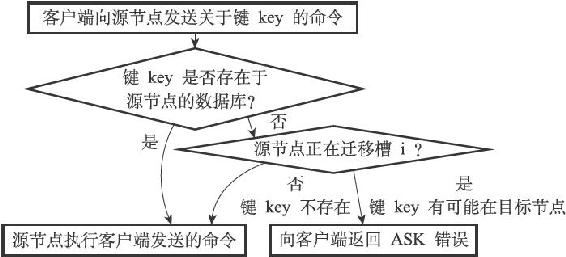
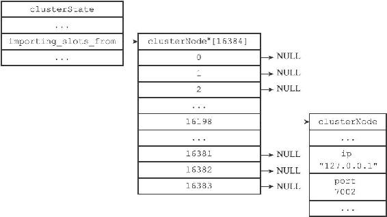
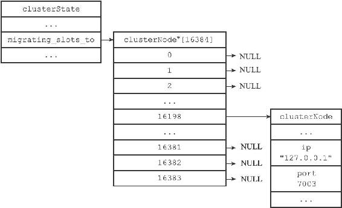
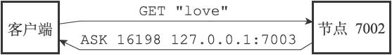
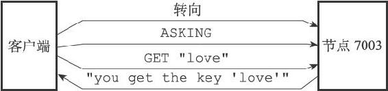
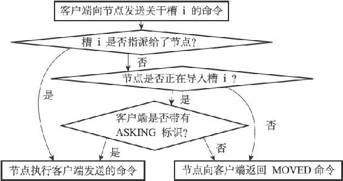

<!DOCTYPE html>
<html lang="zh-CN">
<head>
<meta charset="utf-8">
<meta name="viewport" content="width=device-width, initial-scale=1">
<title>124-17.5_ASK错误</title>
<link id="theme-css" rel="stylesheet" href="../../../../../../../../themes/github.css">
</head>
<body class="done">
<p>17.5 ASK错误</p>
<p>在进行重新分片期间，源节点向目标节点迁移一个槽的过程中，可能会出现这样一种情况：属于被迁移槽的一部分键值对保存在源节点里面，而另一部分键值对则保存在目标节点里面。</p>
<p>当客户端向源节点发送一个与数据库键有关的命令，并且命令要处理的数据库键恰好就属于正在被迁移的槽时：</p>
<p>·源节点会先在自己的数据库里面查找指定的键，如果找到的话，就直接执行客户端发送的命令。</p>
<p>·相反地，如果源节点没能在自己的数据库里面找到指定的键，那么这个键有可能已经被迁移到了目标节点，源节点将向客户端返回一个ASK错误，指引客户端转向正在导入槽的目标节点，并再次发送之前想要执行的命令。</p>
<p>图17-26展示了源节点判断是否需要向客户端发送ASK错误的整个过程。</p>
<p></p>
<p>图17-26 判断是否发送ASK错误的过程</p>
<p>举个例子，假设节点7002正在向节点7003迁移槽16198，这个槽包含"is"和"love"两个键，其中键"is"还留在节点7002，而键"love"已经被迁移到了节点7003。</p>
<p>如果我们向节点7002发送关于键"is"的命令，那么这个命令会直接被节点7002执行：</p>
<hr />
<blockquote>
<p>127.0.0.1:7002&gt; GET "is"<br />
"you get the key 'is'"  </p>
</blockquote>
<hr />
<p>而如果我们向节点7002发送关于键"love"的命令，那么客户端会先被转向至节点7003，然后再次执行命令：</p>
<hr />
<blockquote>
<p>127.0.0.1:7002&gt; GET "love"<br />
-&gt; Redirected to slot [16198] located at 127.0.0.1:7003<br />
"you get the key 'love'"<br />
127.0.0.1:7003&gt;  </p>
</blockquote>
<hr />
<blockquote>
<p>被隐藏的ASK错误</p>
<p>和接到MOVED错误时的情况类似，集群模式的redis-cli在接到ASK错误时也不会打印错误，而是自动根据错误提供的IP地址和端口进行转向动作。如果想看到节点发送的ASK错误的话，可以使用单机模式的redis-cli客户端：</p>
</blockquote>
<hr />
<blockquote>
<p>$ redis-cli -p 7002<br />
127.0.0.1:7002&gt; GET "love"<br />
(error) ASK 16198 127.0.0.1:7003  </p>
</blockquote>
<hr />
<p>注意</p>
<p>在写这篇文章的时候，集群模式的redis-cli并未支持ASK自动转向，上面展示的ASK自动转向行为实际上是根据MOVED自动转向行为虚构出来的。因此，当集群模式的redis-cli真正支持ASK自动转向时，它的行为和上面展示的行为可能会有所不同。</p>
<p>本节将对ASK错误的实现原理进行说明，并对比ASK错误和MOVED错误的区别。</p>
<p>17.5.1 CLUSTER SETSLOT IMPORTING命令的实现</p>
<p>clusterState结构的importing_slots_from数组记录了当前节点正在从其他节点导入的槽：</p>
<hr />
<blockquote>
<p>typedef struct clusterState {<br />
// ...<br />
clusterNode *importing_slots_from[16384];<br />
// ...<br />
} clusterState;  </p>
</blockquote>
<hr />
<p>如果importing_slots_from[i]的值不为NULL，而是指向一个clusterNode结构，那么表示当前节点正在从clusterNode所代表的节点导入槽i。</p>
<p>在对集群进行重新分片的时候，向目标节点发送命令：</p>
<hr />
<blockquote>
<p>CLUSTER SETSLOT <i> IMPORTING <source\_id>  </p>
</blockquote>
<hr />
<p>可以将目标节点clusterState.importing_slots_from[i]的值设置为source_id所代表节点的clusterNode结构。</p>
<p>举个例子，如果客户端向节点7003发送以下命令：</p>
<hr />
<blockquote>
<p># 9dfb... <br />
是节点7002 <br />
的ID <br />
127.0.0.1:7003&gt; CLUSTER SETSLOT 16198 IMPORTING 9dfb4c4e016e627d9769e4c9bb0d4fa208e65c26<br />
OK  </p>
</blockquote>
<hr />
<p>那么节点7003的clusterState.importing_slots_from数组将变成图17-27所示的样子。</p>
<p></p>
<p>图17-27 节点7003的importing_slots_from数组</p>
<p>17.5.2 CLUSTER SETSLOT MIGRATING命令的实现</p>
<p>clusterState结构的migrating_slots_to数组记录了当前节点正在迁移至其他节点的槽：</p>
<hr />
<blockquote>
<p>typedef struct clusterState {<br />
// ...<br />
clusterNode *migrating_slots_to[16384];<br />
// ...<br />
} clusterState;  </p>
</blockquote>
<hr />
<p>如果migrating_slots_to[i]的值不为NULL，而是指向一个clusterNode结构，那么表示当前节点正在将槽i迁移至clusterNode所代表的节点。</p>
<p>在对集群进行重新分片的时候，向源节点发送命令：</p>
<hr />
<blockquote>
<p>CLUSTER SETSLOT <i> MIGRATING <target\_id>  </p>
</blockquote>
<hr />
<p>可以将源节点clusterState.migrating_slots_to[i]的值设置为target_id所代表节点的clusterNode结构。</p>
<p>举个例子，如果客户端向节点7002发送以下命令：</p>
<hr />
<blockquote>
<p># 0457... <br />
是节点7003 <br />
的ID <br />
127.0.0.1:7002&gt; CLUSTER SETSLOT 16198 MIGRATING 04579925484ce537d3410d7ce97bd2e260c459a2<br />
OK  </p>
</blockquote>
<hr />
<p>那么节点7002的clusterState.migrating_slots_to数组将变成图17-28所示的样子。</p>
<p></p>
<p>图17-28 节点7002的migrating_slots_to数组</p>
<p>17.5.3 ASK错误</p>
<p>如果节点收到一个关于键key的命令请求，并且键key所属的槽i正好就指派给了这个节点，那么节点会尝试在自己的数据库里查找键key，如果找到了的话，节点就直接执行客户端发送的命令。</p>
<p>与此相反，如果节点没有在自己的数据库里找到键key，那么节点会检查自己的clusterState.migrating_slots_to[i]，看键key所属的槽i是否正在进行迁移，如果槽i的确在进行迁移的话，那么节点会向客户端发送一个ASK错误，引导客户端到正在导入槽i的节点去查找键key。</p>
<p>举个例子，假设在节点7002向节点7003迁移槽16198期间，有一个客户端向节点7002发送命令：</p>
<hr />
<blockquote>
<p>GET <br />
“love<br />
”  </p>
</blockquote>
<hr />
<p>因为键"love"正好属于槽16198，所以节点7002会首先在自己的数据库中查找键"love"，但并没有找到，通过检查自己的clusterState.migrating_slots_to[16198]，节点7002发现自己正在将槽16198迁移至节点7003，于是它向客户端返回错误：</p>
<hr />
<blockquote>
<p>ASK 16198 127.0.0.1:7003  </p>
</blockquote>
<hr />
<p>这个错误表示客户端可以尝试到IP为127.0.0.1，端口号为7003的节点去执行和槽16198有关的操作，如图17-29所示。</p>
<p></p>
<p>图17-29 客户端接收到节点7002返回的ASK错误</p>
<p>接到ASK错误的客户端会根据错误提供的IP地址和端口号，转向至正在导入槽的目标节点，然后首先向目标节点发送一个ASKING命令，之后再重新发送原本想要执行的命令。</p>
<p>以前面的例子来说，当客户端接收到节点7002返回的以下错误时：</p>
<hr />
<blockquote>
<p>ASK 16198 127.0.0.1:7003  </p>
</blockquote>
<hr />
<p>客户端会转向至节点7003，首先发送命令：</p>
<hr />
<blockquote>
<p>ASKING  </p>
</blockquote>
<hr />
<p>然后再次发送命令：</p>
<hr />
<blockquote>
<p>GET "love"  </p>
</blockquote>
<hr />
<p>并获得回复：</p>
<hr />
<blockquote>
<p>"you get the key 'love'"  </p>
</blockquote>
<hr />
<p>整个过程如图17-30所示。</p>
<p></p>
<p>图17-30 客户端转向至节点7003</p>
<p>17.5.4 ASKING命令</p>
<p>ASKING命令唯一要做的就是打开发送该命令的客户端的REDIS_ASKING标识，以下是该命令的伪代码实现：</p>
<hr />
<blockquote>
<p>def ASKING():<br />
# <br />
打开标识<br />
client.flags |= REDIS_ASKING<br />
# <br />
向客户端返回OK <br />
回复<br />
reply("OK")  </p>
</blockquote>
<hr />
<p>在一般情况下，如果客户端向节点发送一个关于槽i的命令，而槽i又没有指派给这个节点的话，那么节点将向客户端返回一个MOVED错误；但是，如果节点的clusterState.importing_slots_from[i]显示节点正在导入槽i，并且发送命令的客户端带有REDIS_ASKING标识，那么节点将破例执行这个关于槽i的命令一次，图17-31展示了这个判断过程。</p>
<p></p>
<p>图17-31 节点判断是否执行客户端命令的过程</p>
<p>当客户端接收到ASK错误并转向至正在导入槽的节点时，客户端会先向节点发送一个ASKING命令，然后才重新发送想要执行的命令，这是因为如果客户端不发送ASKING命令，而直接发送想要执行的命令的话，那么客户端发送的命令将被节点拒绝执行，并返回MOVED错误。</p>
<p>举个例子，我们可以使用普通模式的redis-cli客户端，向正在导入槽16198的节点7003发送以下命令：</p>
<hr />
<blockquote>
<p>$ ./redis-cli -p 7003<br />
127.0.0.1:7003&gt; GET "love"<br />
(error) MOVED 16198 127.0.0.1:7002  </p>
</blockquote>
<hr />
<p>虽然节点7003正在导入槽16198，但槽16198目前仍然是指派给了节点7002，所以节点7003会向客户端返回MOVED错误，指引客户端转向至节点7002。</p>
<p>但是，如果我们在发送GET命令之前，先向节点发送一个ASKING命令，那么这个GET命令就会被节点7003执行：</p>
<hr />
<blockquote>
<p>127.0.0.1:7003&gt; ASKING<br />
OK<br />
127.0.0.1:7003&gt; GET "love"<br />
"you get the key 'love'"  </p>
</blockquote>
<hr />
<p>另外要注意的是，客户端的REDIS_ASKING标识是一个一次性标识，当节点执行了一个带有REDIS_ASKING标识的客户端发送的命令之后，客户端的REDIS_ASKING标识就会被移除。</p>
<p>举个例子，如果我们在成功执行GET命令之后，再次向节点7003发送GET命令，那么第二次发送的GET命令将执行失败，因为这时客户端的REDIS_ASKING标识已经被移除：</p>
<hr />
<blockquote>
<p>127.0.0.1:7003&gt; ASKING #<br />
打开REDIS_ASKING<br />
标识<br />
OK<br />
127.0.0.1:7003&gt; GET "love" #<br />
移除REDIS_ASKING<br />
标识<br />
"you get the key 'love'"<br />
127.0.0.1:7003&gt; GET "love" # REDIS_ASKING<br />
标识未打开，执行失败<br />
(error) MOVED 16198 127.0.0.1:7002  </p>
</blockquote>
<hr />
<p>17.5.5 ASK错误和MOVED错误的区别</p>
<p>ASK错误和MOVED错误都会导致客户端转向，它们的区别在于：</p>
<p>·MOVED错误代表槽的负责权已经从一个节点转移到了另一个节点：在客户端收到关于槽i的MOVED错误之后，客户端每次遇到关于槽i的命令请求时，都可以直接将命令请求发送至MOVED错误所指向的节点，因为该节点就是目前负责槽i的节点。</p>
<p>·与此相反，ASK错误只是两个节点在迁移槽的过程中使用的一种临时措施：在客户端收到关于槽i的ASK错误之后，客户端只会在接下来的一次命令请求中将关于槽i的命令请求发送至ASK错误所指示的节点，但这种转向不会对客户端今后发送关于槽i的命令请求产生任何影响，客户端仍然会将关于槽i的命令请求发送至目前负责处理槽i的节点，除非ASK错误再次出现。</p>
<style>
#nav-btn {
  position: fixed; top: 10px; left: 10px; z-index: 1000;
  width: 38px; height: 38px; border-radius: 50%;
  background: rgba(127,127,127,.3);
  -webkit-backdrop-filter: blur(4px); backdrop-filter: blur(4px);
  display: flex; align-items: center; justify-content: center;
  cursor: pointer; transition: background .2s ease;
  border: 1px solid rgba(255,255,255,.25);
}
#nav-btn:hover, #nav-btn.open {
  background: rgba(0,0,0,.7); border-color: rgba(255,255,255,.5);
}
#nav-btn svg {
  width: 20px; height: 20px; fill: none; stroke: #fff; stroke-width: 1.8;
  stroke-linecap: round; stroke-linejoin: round;
  filter: drop-shadow(0 1px 2px rgba(0,0,0,.6));
}
#nav-panel {
  position: fixed; top: 0; left: 0; bottom: 0; z-index: 999;
  width: 260px; transform: translateX(-100%);
  visibility: hidden;
  /* 收回时 transform 动画结束后再隐藏，避免移出后边缘残留 1px 竖线 */
  transition: transform .25s ease, visibility 0s .25s;
  background: var(--nav-bg, rgba(255,255,255,.95));
  color: var(--nav-fg, #555);
  -webkit-backdrop-filter: blur(8px); backdrop-filter: blur(8px);
  box-shadow: 2px 0 16px rgba(0,0,0,.18);
  display: flex; flex-direction: column;
  font-size: 13px; font-family: Arial, sans-serif;
}
#nav-panel.open {
  transform: translateX(0);
  visibility: visible;
  transition: transform .25s ease, visibility 0s;
}
#nav-panel .nav-head {
  padding: 14px 16px 10px; font-size: 14px; font-weight: 600;
  color: var(--nav-fg, #555);
  border-bottom: 1px solid color-mix(in srgb, var(--nav-fg, #555) 14%, transparent);
}
#nav-panel .nav-tree {
  flex: 1; overflow-y: auto; padding: 8px 8px 24px; margin: 0;
  list-style: none; box-sizing: border-box;
}
#nav-panel ul { list-style: none; margin: 0; padding: 0 0 0 14px; }
#nav-panel .nav-dir {
  padding: 2px 0; cursor: pointer; color: var(--nav-fg, #555);
  white-space: nowrap; overflow: hidden; text-overflow: ellipsis;
}
#nav-panel .nav-dir-label::before {
  content: "▾"; display: inline-block; width: 14px;
  color: color-mix(in srgb, var(--nav-fg, #555) 60%, transparent);
  font-size: 10px; vertical-align: 1px;
}
#nav-panel .nav-dir.collapsed > .nav-dir-label::before { content: "▸"; }
#nav-panel .nav-dir.collapsed > ul { display: none; }
#nav-panel .nav-dir-label:hover { color: var(--nav-fg, #111); }
#nav-panel .nav-file {
  display: block; padding: 3px 6px; margin: 1px 0;
  border-radius: 5px; color: var(--nav-fg, #444); text-decoration: none;
  white-space: nowrap; overflow: hidden; text-overflow: ellipsis;
  line-height: 1.45;
}
#nav-panel .nav-file:hover {
  background: color-mix(in srgb, var(--nav-fg, #555) 9%, transparent);
}
#nav-panel .nav-file.active {
  background: color-mix(in srgb, var(--nav-fg, #555) 16%, transparent);
  color: var(--nav-fg, #111); font-weight: 600;
}
#nav-panel .nav-empty {
  padding: 8px; color: color-mix(in srgb, var(--nav-fg, #888) 70%, transparent);
}
</style>
<button id="nav-btn" type="button" aria-label="文件树" title="文件树">
<svg viewBox="0 0 24 24" xmlns="http://www.w3.org/2000/svg">
<path d="M3 6a2 2 0 0 1 2-2h3l2 2h9a2 2 0 0 1 2 2v9a2 2 0 0 1-2 2H5a2 2 0 0 1-2-2z"/>
</svg>
</button>
<div id="nav-panel">
<div class="nav-head">&nbsp;</div>
<ul class="nav-tree"><li class="nav-empty">加载中...</li></ul>
</div>
<script>
(function () {
  var btn = document.getElementById("nav-btn");
  var panel = document.getElementById("nav-panel");
  if (!btn || !panel) return;
  // 复用当前主题的 --bg-color / --text-color 给面板配色（没有则回退默认浅色）
  var hexToRgb = function (hex) {
    var h = String(hex).trim().replace("#", "");
    if (h.length === 3) { h = h[0] + h[0] + h[1] + h[1] + h[2] + h[2]; }
    if (!/^[0-9a-fA-F]{6}$/.test(h)) return null;
    var n = parseInt(h, 16);
    return (n >> 16 & 255) + "," + (n >> 8 & 255) + "," + (n & 255);
  };
  var refreshNavTheme = function () {
    var cs = getComputedStyle(document.body);
    var bg = cs.getPropertyValue("--bg-color").trim();
    var fg = cs.getPropertyValue("--text-color").trim();
    var rgb = hexToRgb(bg);
    if (rgb) panel.style.setProperty("--nav-bg", "rgba(" + rgb + ",.92)");
    if (fg) panel.style.setProperty("--nav-fg", fg);
  };
  refreshNavTheme();
  window.addEventListener("pkm-theme-applied", refreshNavTheme);
  var toggle = function () {
    panel.classList.toggle("open");
    btn.classList.toggle("open");
  };
  btn.addEventListener("click", function (e) { e.stopPropagation(); toggle(); });
  document.addEventListener("click", function (e) {
    if (panel.classList.contains("open") &&
        !panel.contains(e.target) && e.target !== btn) toggle();
  });
  // 当前页面到站点根的相对前缀（由 site-tree.json 的相对路径反推）
  var base = "../../../../../../../../site-tree.json".replace(/site-tree\.json$/, "");
  // 当前页面相对站点根的路径（用于高亮）
  var curRel = decodeURIComponent(location.pathname).replace(/^\//, "");
  // 首页（站点根 index.html）时链接一律新标签页打开，不打断首页音乐播放
  var isHome = /index\.html$/.test(curRel) || curRel.replace(/\/$/, "").split("/").length === 1;
  fetch("../../../../../../../../site-tree.json")
    .then(function (r) { return r.json(); })
    .then(function (root) {
      var box = panel.querySelector(".nav-tree");
      box.innerHTML = "";
      if (!root.children || !root.children.length) {
        box.innerHTML = '<li class="nav-empty">暂无文件</li>';
        return;
      }
      (root.children || []).forEach(function (c) { box.appendChild(buildNode(c, 0)); });
      expandActive(box);
    })
    .catch(function () {
      panel.querySelector(".nav-tree").innerHTML =
        '<li class="nav-empty">文件树加载失败</li>';
    });
  function buildNode(node, depth) {
    var li = document.createElement("li");
    if (node.type === "dir") {
      li.className = "nav-dir" + (depth > 0 ? " collapsed" : "");
      var label = document.createElement("span");
      label.className = "nav-dir-label";
      label.textContent = node.name;
      label.addEventListener("click", function () {
        li.classList.toggle("collapsed");
      });
      li.appendChild(label);
      var ul = document.createElement("ul");
      (node.children || []).forEach(function (c) { ul.appendChild(buildNode(c, depth + 1)); });
      li.appendChild(ul);
    } else {
      var a = document.createElement("a");
      a.className = "nav-file";
      a.href = base + node.rel;
      if (isHome) a.target = "_blank";
      a.textContent = node.name;
      if (node.rel === curRel) a.classList.add("active");
      li.appendChild(a);
    }
    return li;
  }
  function expandActive(box) {
    var a = box.querySelector("a.active");
    if (!a) return;
    var p = a.parentElement;
    while (p && p !== box) {
      if (p.classList && p.classList.contains("nav-dir")) {
        p.classList.remove("collapsed");
      }
      p = p.parentElement;
    }
  }
})();
</script>
<style>
#toc-btn {
  position: fixed; top: 10px; left: 56px; z-index: 1000;
  width: 38px; height: 38px; border-radius: 50%;
  background: rgba(127,127,127,.3);
  -webkit-backdrop-filter: blur(4px); backdrop-filter: blur(4px);
  display: flex; align-items: center; justify-content: center;
  cursor: pointer; transition: background .2s ease;
  border: 1px solid rgba(255,255,255,.25);
}
#toc-btn:hover, #toc-btn.open {
  background: rgba(0,0,0,.7); border-color: rgba(255,255,255,.5);
}
#toc-btn svg {
  width: 20px; height: 20px; fill: none; stroke: #fff; stroke-width: 1.8;
  stroke-linecap: round; stroke-linejoin: round;
  filter: drop-shadow(0 1px 2px rgba(0,0,0,.6));
}
#toc-panel {
  position: fixed; top: 58px; left: 10px; z-index: 1000;
  width: 240px; max-height: 60vh; overflow-y: auto;
  background: var(--nav-bg, rgba(255,255,255,.95));
  color: var(--nav-fg, #555);
  -webkit-backdrop-filter: blur(8px); backdrop-filter: blur(8px);
  box-shadow: 0 4px 24px rgba(0,0,0,.18);
  border-radius: 10px; padding: 6px;
  display: none; font-size: 13px; font-family: Arial, sans-serif;
}
#toc-panel.open { display: block; }
#toc-panel .toc-list {
  list-style: none; margin: 0; padding: 0;
}
#toc-panel ul { list-style: none; margin: 0; padding: 0 0 0 12px; }
#toc-panel li { margin: 1px 0; }
#toc-panel a {
  display: block; padding: 3px 8px; border-radius: 5px;
  color: var(--nav-fg, #444); text-decoration: none;
  white-space: nowrap; overflow: hidden; text-overflow: ellipsis;
}
#toc-panel a:hover {
  background: color-mix(in srgb, var(--nav-fg, #555) 9%, transparent);
}
#toc-panel a.active {
  background: color-mix(in srgb, var(--nav-fg, #555) 16%, transparent);
  color: var(--nav-fg, #111); font-weight: 600;
}
#toc-panel .toc-empty {
  padding: 8px; color: color-mix(in srgb, var(--nav-fg, #888) 70%, transparent);
}
</style>
<button id="toc-btn" type="button" aria-label="页面目录" title="页面目录">
<svg viewBox="0 0 24 24" xmlns="http://www.w3.org/2000/svg">
<path d="M3 6h12M3 12h12M3 18h12"/>
<path d="M17 4l3 3-3 3M17 10l3 3-3 3M17 16l3 3-3 3"/>
</svg>
</button>
<div id="toc-panel"></div>
<script>
(function () {
  var btn = document.getElementById("toc-btn");
  var panel = document.getElementById("toc-panel");
  if (!btn || !panel) return;

  // 复用当前主题背景色给大纲面板配色（与导航面板同一套变量名）
  var hexToRgb = function (hex) {
    var h = String(hex).trim().replace("#", "");
    if (h.length === 3) { h = h[0] + h[0] + h[1] + h[1] + h[2] + h[2]; }
    if (!/^[0-9a-fA-F]{6}$/.test(h)) return null;
    var n = parseInt(h, 16);
    return (n >> 16 & 255) + "," + (n >> 8 & 255) + "," + (n & 255);
  };
  var refreshTocTheme = function () {
    var cs = getComputedStyle(document.body);
    var bg = cs.getPropertyValue("--bg-color").trim();
    var fg = cs.getPropertyValue("--text-color").trim();
    var rgb = hexToRgb(bg);
    if (rgb) panel.style.setProperty("--nav-bg", "rgba(" + rgb + ",.92)");
    if (fg) panel.style.setProperty("--nav-fg", fg);
  };
  refreshTocTheme();
  window.addEventListener("pkm-theme-applied", refreshTocTheme);

  var headings = Array.prototype.slice.call(
    document.querySelectorAll("h1,h2,h3,h4,h5,h6")
  ).filter(function (el) { return el.id; });
  if (!headings.length) {
    btn.style.display = "none";
    return;
  }

  var open = function () { panel.classList.add("open"); btn.classList.add("open"); };
  var close = function () { panel.classList.remove("open"); btn.classList.remove("open"); };
  btn.addEventListener("click", function (e) {
    e.stopPropagation();
    if (panel.classList.contains("open")) close(); else open();
  });
  document.addEventListener("click", function (e) {
    if (panel.classList.contains("open") &&
        !panel.contains(e.target) && e.target !== btn) close();
  });
  document.addEventListener("keydown", function (e) {
    if (e.key === "Escape") close();
  });

  // 按标题级别构建嵌套目录（栈式算法：h1 > h2 > h3 层级缩进）
  var root = document.createElement("ul");
  root.className = "toc-list";
  var stack = [{ level: 0, ul: root }];
  headings.forEach(function (h) {
    var level = parseInt(h.tagName.slice(1), 10);
    var li = document.createElement("li");
    var a = document.createElement("a");
    a.href = "#" + h.id;
    a.textContent = h.textContent;
    li.appendChild(a);
    while (stack.length && stack[stack.length - 1].level >= level) stack.pop();
    var parent = stack[stack.length - 1] || { ul: root };
    parent.ul.appendChild(li);
    var sub = document.createElement("ul");
    li.appendChild(sub);
    stack.push({ level: level, ul: sub });
  });
  panel.appendChild(root);

  // 点击目录项平滑滚动到标题，并更新高亮
  var cur = null;
  var setActive = function (a) {
    if (cur) cur.classList.remove("active");
    cur = a;
    if (cur) cur.classList.add("active");
  };
  panel.addEventListener("click", function (e) {
    var a = e.target.closest("a");
    if (!a) return;
    e.preventDefault();
    var el = document.getElementById(decodeURIComponent(a.getAttribute("href").slice(1)));
    if (!el) return;
    el.scrollIntoView({ behavior: "smooth", block: "start" });
    setActive(a);
  });
  // 滚动时跟随当前章节高亮
  var updateActive = function () {
    var pos = window.scrollY + 80;
    var idx = -1;
    for (var i = 0; i < headings.length; i++) {
      if (headings[i].offsetTop <= pos) idx = i; else break;
    }
    var target = idx >= 0 ? root.querySelector('a[href="#' + headings[idx].id + '"]') : null;
    if (target && target !== cur) setActive(target);
  };
  window.addEventListener("scroll", updateActive, { passive: true });
  updateActive();
})();
</script>
<button id="theme-btn" type="button" aria-label="切换主题" title="切换主题"><svg viewBox="0 0 24 24" xmlns="http://www.w3.org/2000/svg"><path d="M12 3a9 9 0 1 0 0 18c1.1 0 1.5-.8 1.5-1.5S13 18 13.5 18H15a3 3 0 0 0 3-3c0-4.5-3.6-12-6-12z"/><circle cx="7.5" cy="10.5" r="1.2"/><circle cx="12" cy="7.5" r="1.2"/><circle cx="16.5" cy="10.5" r="1.2"/></svg></button><div id="theme-menu"></div>
<style>
#theme-btn {
  position: fixed; top: 10px; right: 10px; z-index: 1000;
  width: 38px; height: 38px; border-radius: 50%;
  background: rgba(127,127,127,.3);
  -webkit-backdrop-filter: blur(4px); backdrop-filter: blur(4px);
  display: flex; align-items: center; justify-content: center;
  cursor: pointer; transition: background .2s ease;
  border: 1px solid rgba(255,255,255,.25);
}
#theme-btn:hover, #theme-btn.open {
  background: rgba(0,0,0,.7); border-color: rgba(255,255,255,.5);
}
#theme-btn svg {
  width: 20px; height: 20px; fill: none; stroke: #fff; stroke-width: 1.8;
  stroke-linecap: round; stroke-linejoin: round;
  filter: drop-shadow(0 1px 2px rgba(0,0,0,.6));
}
#theme-menu {
  position: fixed; top: 56px; right: 10px; z-index: 1000;
  display: none; min-width: 160px; max-height: 70vh; overflow-y: auto;
  background: rgba(255,255,255,.95);
  -webkit-backdrop-filter: blur(8px); backdrop-filter: blur(8px);
  border-radius: 10px; box-shadow: 0 4px 20px rgba(0,0,0,.2);
  padding: 6px; font-size: 13px; font-family: Arial, sans-serif;
}
#theme-menu.open { display: block; }
.theme-item {
  padding: 6px 10px; border-radius: 6px; cursor: pointer;
  color: #333; white-space: nowrap;
}
.theme-item:hover { background: rgba(0,0,0,.08); }
.theme-item.active { background: rgba(0,0,0,.15); font-weight: 600; }
</style>
<script>
(function () {
  var themes = ["github", "newsprint", "night", "phycat-abyss", "phycat-caramel", "phycat-cherry", "phycat-forest", "phycat-mauve", "phycat-mint", "phycat-prussian", "phycat-radiation", "phycat-sakura", "phycat-sky", "phycat-vampire", "pixyll", "vlook-fancy", "vlook-geek", "vlook-hope", "vlook-joint", "vlook-solaris", "vlook-thinking", "whitey"];
  var base = "../../../../../../../../themes/";
  var link = document.getElementById("theme-css");
  var btn = document.getElementById("theme-btn");
  var menu = document.getElementById("theme-menu");
  var saved = null;
  try { saved = localStorage.getItem("pkm-theme"); } catch (e) {}
  var current = (saved && themes.indexOf(saved) > -1) ? saved : "github";
  themes.forEach(function (name) {
    var item = document.createElement("div");
    item.className = "theme-item";
    item.textContent = name;
    item.addEventListener("click", function () { apply(name); hide(); });
    menu.appendChild(item);
  });
  var apply = function (name) {
    current = name;
    link.href = base + name + ".css";
    link.onload = function () {
      try { window.dispatchEvent(new Event("pkm-theme-applied")); } catch (e) {}
    };
    try { localStorage.setItem("pkm-theme", name); } catch (e) {}
    refreshActive();
  };
  var refreshActive = function () {
    var items = menu.querySelectorAll(".theme-item");
    for (var i = 0; i < items.length; i++) {
      items[i].classList.toggle("active", items[i].textContent === current);
    }
  };
  var show = function () { menu.classList.add("open"); btn.classList.add("open"); };
  var hide = function () { menu.classList.remove("open"); btn.classList.remove("open"); };
  btn.addEventListener("click", function () {
    if (menu.classList.contains("open")) { hide(); } else { show(); }
  });
  document.addEventListener("click", function (e) {
    if (!btn.contains(e.target) && !menu.contains(e.target)) { hide(); }
  });
  apply(current);
})();
</script>
<style>
#pkm-lightbox {
  position: fixed; inset: 0; z-index: 9999;
  background: rgba(0, 0, 0, .85);
  display: none; align-items: center; justify-content: center;
  cursor: zoom-out; padding: 4vh 4vw;
}
#pkm-lightbox.open {
  display: flex;
}
#pkm-lightbox img {
  max-width: 92vw; max-height: 92vh;
  box-shadow: 0 8px 48px rgba(0, 0, 0, .55);
  border-radius: 4px;
  background: #fff;
}
</style>
<script>
(function () {
  var box = document.createElement('div');
  box.id = 'pkm-lightbox';
  var boxImg = document.createElement('img');
  box.appendChild(boxImg);
  document.body.appendChild(box);

  function open(src, alt) {
    boxImg.src = src;
    boxImg.alt = alt || '';
    box.classList.add('open');
  }
  function close() {
    box.classList.remove('open');
  }

  box.addEventListener('click', close);
  document.addEventListener('keydown', function (e) {
    if (e.key === 'Escape') close();
  });
  document.addEventListener('dblclick', function (e) {
    var t = e.target;
    if (t && t.tagName === 'IMG' && !t.closest('nav, #nav-btn, #theme-btn, #theme-menu, #pkm-lightbox')) {
      e.preventDefault();
      open(t.currentSrc || t.src, t.alt);
    }
  });
})();
</script>

</body>
</html>